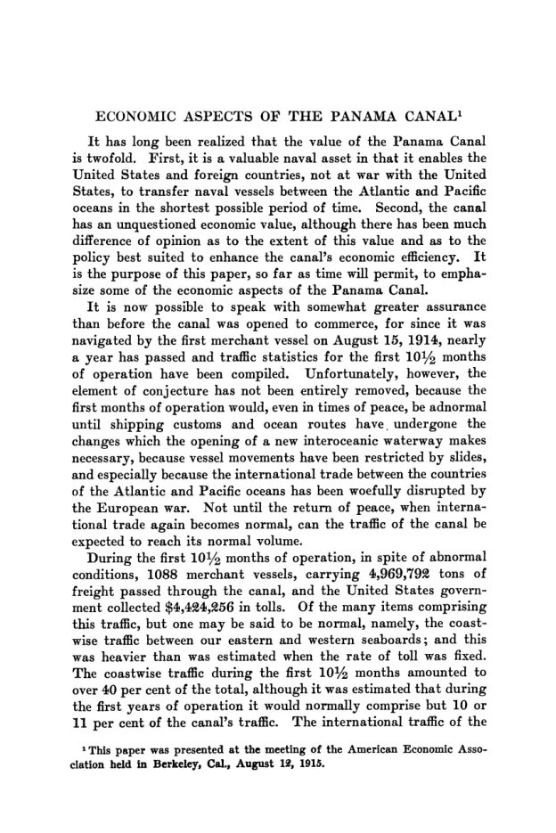

Huebner e o primeiro ano do canal do Panamá
Leitura: 7 min
Em dez meses e meio, 1.088 navios cruzaram o canal. G. G. Huebner mede o que mudou em rotas, fretes, tarifas ferroviárias e comércio, e lista o que ainda faltava para o canal render tudo o que podia.


O primeiro navio mercante atravessou o canal do Panamá em 15 de agosto de 1914, quando a guerra europeia acabava de começar. Nos dez meses e meio seguintes passaram 1.088 navios mercantes com 4.969.792 toneladas de carga, e o governo dos Estados Unidos arrecadou US$ 4.424.256 em pedágios.
G. G. Huebner, da University of Pennsylvania, apresentou o balanço em Berkeley, em 12 de agosto de 1915, na reunião especial da American Economic Association, e o publicou na American Economic Review de dezembro. Ele havia trabalhado por dois anos no estudo de tráfego, custos de navegação e rotas que embasou a recomendação de pedágios de Emory R. Johnson, comissário especial para tráfego e tarifas. Distingue duas funções do canal, a naval e a econômica, e trata só da segunda.
O que os primeiros meses mostraram?
Huebner adverte que os números são anormais: o tráfego ainda se ajustava às novas rotas, deslizamentos de terra interromperam a passagem e a guerra desorganizou o comércio entre os países do Atlântico e do Pacífico. Só um item seria normal, a cabotagem entre as costas leste e oeste dos Estados Unidos, e ele superou a previsão.
Quanto o canal encurta as rotas?
Quatro grandes rotas são afetadas: a do cabo Horn ou estreito de Magalhães, as travessias ferroviárias do Panamá e de Tehuantepec, a do cabo da Boa Esperança e a de Suez. Huebner enumera cinco fatores de escolha: distância, tempo de viagem, custo do carvão, facilidade de obter carga e custo de transbordo. Os veleiros ficam praticamente de fora, porque ventos incertos e calmarias dificultam a aproximação pelo Pacífico.
As distâncias poupadas são grandes. De Nova York a San Francisco, 7.873 milhas náuticas a menos que por Magalhães; a Valparaíso, 3.747; a Iquique, porto do salitre chileno, 5.139; a Guayaquil, 7.405. Em relação a Suez, Nova York fica 3.768 milhas mais perto de Yokohama e 1.876 de Xangai. De San Francisco a Liverpool, 5.666 milhas a menos. Para um vapor comum de 10 nós, a economia chega a 33,3 dias até a costa do Pacífico, 15,8 até Sydney e 15,2 até Yokohama, o que significa serviço mais frequente, entrega mais rápida e custo de operação menor.
O transbordo explica a rapidez com que o canal absorveu o tráfego das ferrovias do istmo. Em Tehuantepec ele custava em média cerca de US$ 3,50 por tonelada de carga, e no Panamá cerca de US$ 3. O pedágio de US$ 1,20 por tonelada líquida do navio equivale a 80 a 90 centavos por tonelada de carga média.
“O canal do Panamá influencia o comércio apenas na medida em que melhora as condições de transporte.” (“the Panama Canal influences trade only in so far as it improves transportation conditions”)
O que aconteceu com fretes e ferrovias?
Os fretes de costa a costa pelo canal, segundo cotações de setembro de 1914 e junho de 1915, ficaram de 5% a 20% abaixo dos anteriores em muitas mercadorias, enquanto os fretes transatlânticos subiam com a falta de navios. Antes havia três linhas privadas e uma do governo nesse tráfego; agora eram cinco linhas privadas.
As ferrovias transcontinentais reduziram tarifas para a costa do Pacífico em muitas mercadorias e estenderam os cortes ao Meio-Oeste, e a Interstate Commerce Commission autorizou tarifas menores para os terminais do Pacífico que para pontos intermediários. Quem esperava cortes drásticos se decepcionaria: só de 20% a 22% do frete transcontinental vinha do litoral atlântico ou ia para ele, e reduzir tudo para disputar essa fração obrigaria a estender a redução ao tráfego muito maior do Meio-Oeste. A região menos beneficiada foram as Montanhas Rochosas, porque as ferrovias ampliaram a diferença entre as tarifas para os terminais e as tarifas para o interior.
Quem ganha com o canal?
Sobretudo as Américas. O canal encurta as rotas dos Estados Unidos muito mais que as da Europa: de Nova York a Valparaíso são 3.747 milhas a menos, de Liverpool só 1.540; para Wellington, 2.493 e 1.564. Para a Ásia e a Austrália, a rota europeia continua mais curta por Suez. Os portos do golfo do México ganham mais que todos: de Nova Orleans a Manila a distância cai 1.978 milhas, ante 41 milhas a partir de Nova York.
Huebner previne contra expectativas de revolução comercial. Grande parte da América do Sul, incluindo Argentina, Brasil e Uruguai, fica a leste do canal. Nos mercados do Pacífico os exportadores americanos enfrentavam concorrentes estabelecidos; a participação dos Estados Unidos nas importações da Nova Zelândia, por exemplo, oscilara entre 7% e 13% desde 1900. Investimentos externos, bancos, crédito e métodos de venda pesam tanto quanto o frete. Na indústria, o canal aproxima fábricas de matérias-primas: lã australiana vai direto às tecelagens do Leste, minério da costa oeste sul-americana chega às siderúrgicas atlânticas, e carvão do Leste segue para o Pacífico.
O que faltava fazer?
O autor elogia a construção, os pedágios fixados depois de estudo detalhado e a decisão de cobrá-los igualmente de todas as bandeiras, inclusive da cabotagem americana, protegida da concorrência estrangeira. A tarifa é de US$ 1,20 por tonelada líquida, com redução de 40% para navios em lastro, calculada por regras de medição feitas para refletir a capacidade de ganho de cada navio. Suez cobrava tarifa semelhante e mais 10 francos por passageiro; o Panamá não cobrava passageiros.
A primeira tarefa pendente é a marinha mercante. A lei do canal de 1912, emendada em 1914, permitiu registrar navios construídos no exterior, mas o armador americano continuava com custos de operação maiores. Huebner propõe rever as leis de navegação e pagar subvenções postais a poucas linhas, com rotas e frequência definidas em contrato, e vê na operação estatal o risco de afastar as empresas privadas.
A segunda é a regulação. A lei proibia o uso do canal por navios de ferrovias, embora uma comissão do Congresso tivesse apurado que as ferrovias detinham 61,9% da tonelagem das linhas regulares no Atlântico e no Golfo e 19,8% no Pacífico, e vetava linhas que violassem a lei antitruste, num setor em que a combinação de fretes era prática universal. Huebner prefere supervisão da Interstate Commerce Commission a proibição, e pede que exportadores possam se associar para vender no exterior, como já faziam seus concorrentes estrangeiros.
“O transporte é apenas um elemento do comércio internacional.” (“transportation is but one element in international trade”)
Na minha leitura
Na minha leitura, o valor do artigo está em separar o efeito de uma infraestrutura do efeito das condições que a cercam. Huebner mede a vantagem do canal em milhas, dias e centavos por tonelada, e ao mesmo tempo mostra por que essa vantagem não se converte automaticamente em comércio: concorrência estrangeira estabelecida, mercados pequenos ou pobres, crédito e investimento.
O texto também é um bom exemplo de análise de concorrência entre modais. A resposta das ferrovias depende de qual fração de seu tráfego está exposta à rota marítima; por isso o corte de tarifas se concentra nos terminais e as regiões do interior podem até perder. É a lógica da discriminação de preços que a regulação da época procurava disciplinar.
Glossário
- Cabotagem
- navegação comercial entre portos do mesmo país.
- Tonelada líquida de registro
- medida da capacidade útil de um navio, base do pedágio.
- Transbordo
- transferência da carga de um navio para outro meio de transporte e de volta.
- Navio em lastro
- navio que viaja sem carga paga.
- Subvenção postal
- pagamento do governo a uma linha de navegação pelo transporte de correspondência, usado como subsídio.
- Tarifa de terminal
- frete ferroviário para os portos onde há concorrência marítima, menor que para pontos do interior.
Fontes
- Economic Aspects of the Panama Canal — G. G. Huebner (University of Pennsylvania) (pp. 816–829). JSTOR · Internet Archive (PDF)
- Edição completa, com os demais artigos: Nº 138 do Arquivo.
Documento em domínio público (EUA, publicado antes de 1931), via JSTOR Early Journal Content e Internet Archive. Resumo e comentário do autor deste site, sem afiliação com a American Economic Association. Encontrou um erro? Escreva: a correção é publicada no próprio texto, com data.
← Watkins e o terceiro fator da produtividade ↑ Nº 138 · A população da Europa, o fator de carga e o canal do Panamá